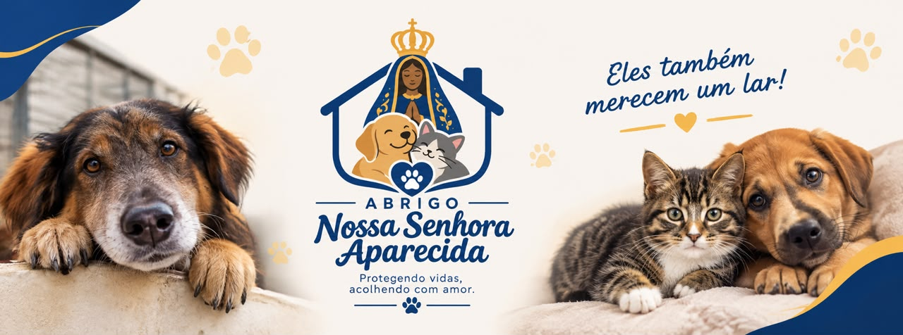
131 vidas dependem de quem se importa
Somos um abrigo que resgata, alimenta e cuida de cães e gatos em situação de rua. Sem CNPJ ainda, sem prédio bonito — só gente cuidando de bicho todos os dias. Sua doação vai direto pra comida, veterinário e castração.
Escolha quanto você quer doar
Qualquer valor ajuda. Toque em um valor abaixo ou digite outro — o pagamento é feito em segundos pelo Pix.
A realidade do abrigo, sem filtro
Não vamos esconder que a estrutura é simples e que muitos animais ainda esperam por um espaço melhor. É exatamente por isso que sua doação importa.
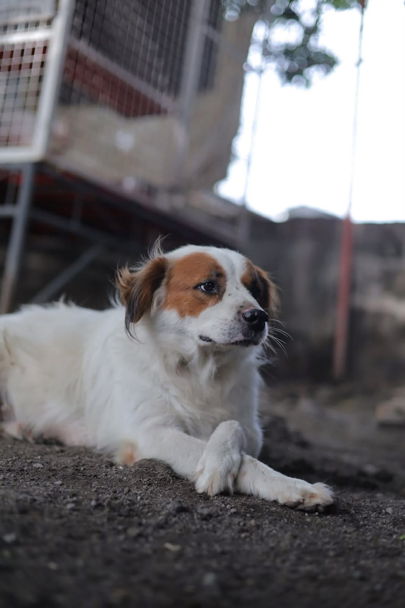
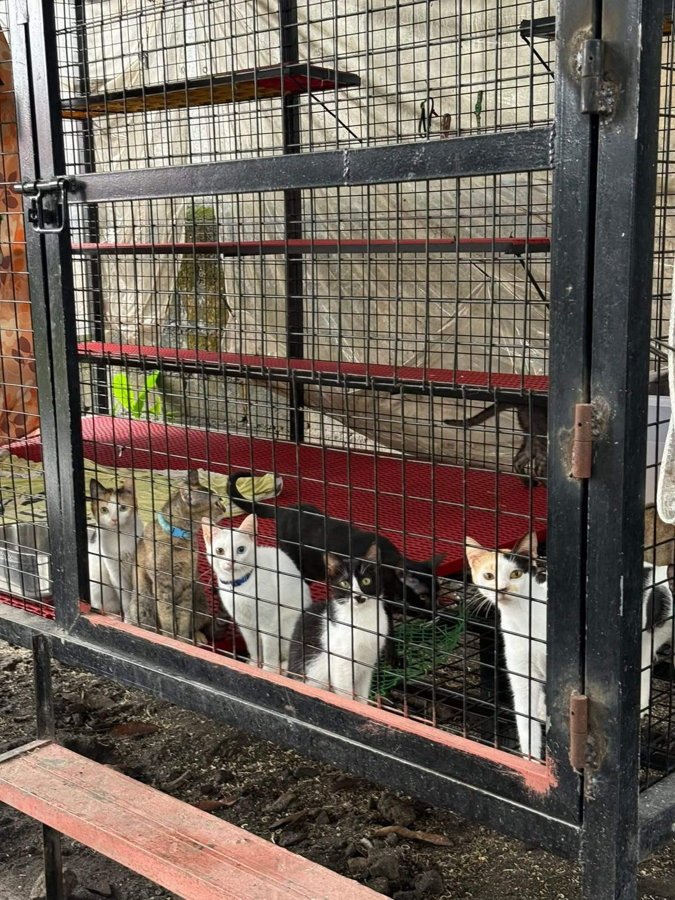
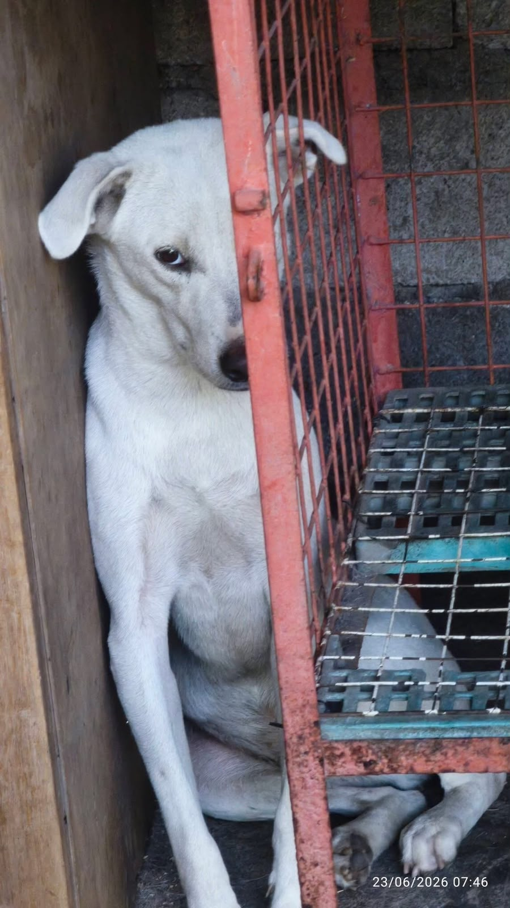
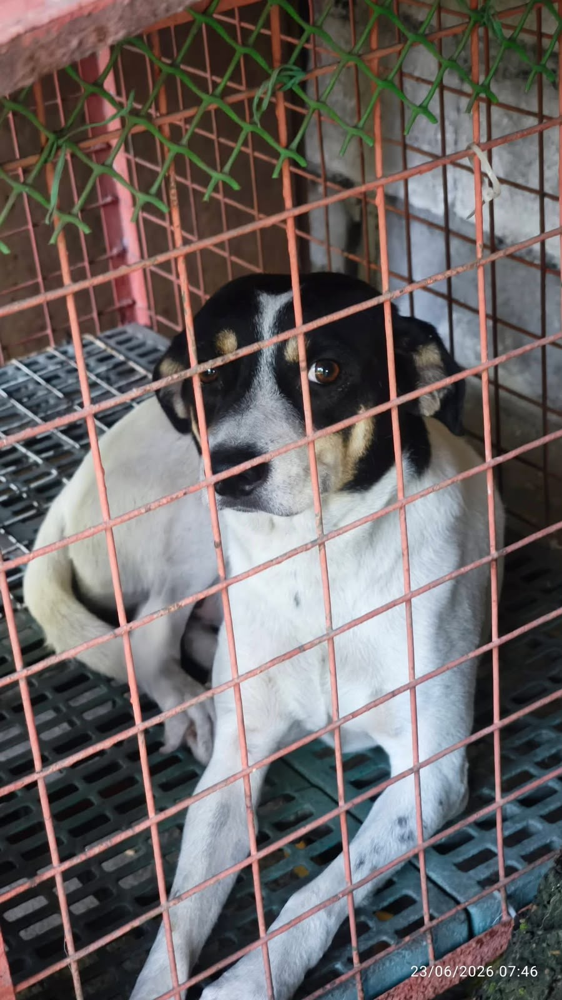
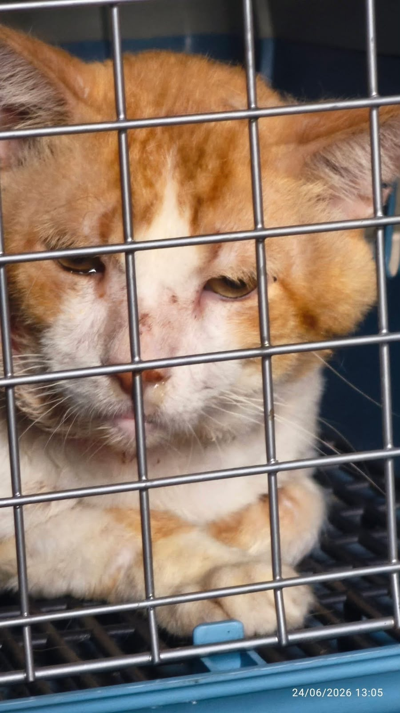
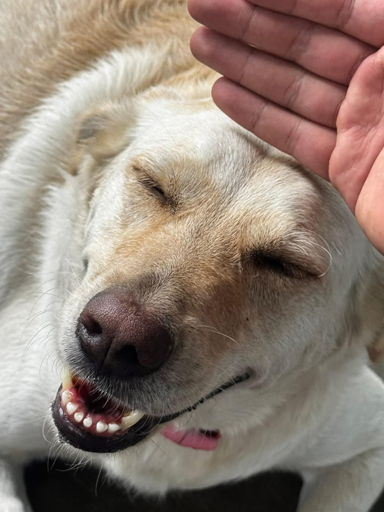
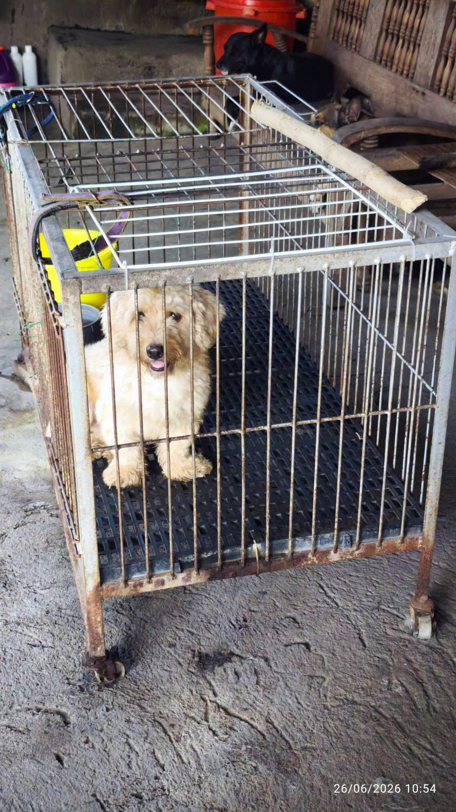
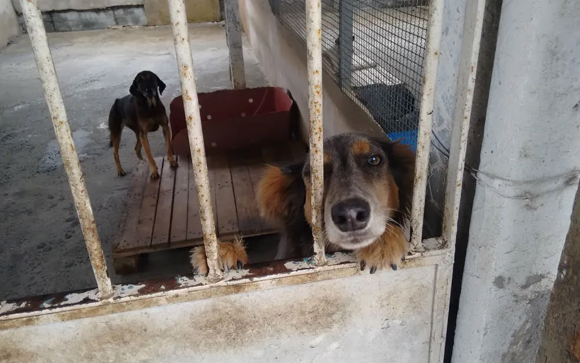
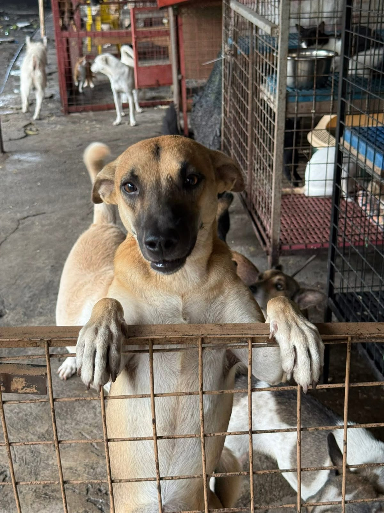
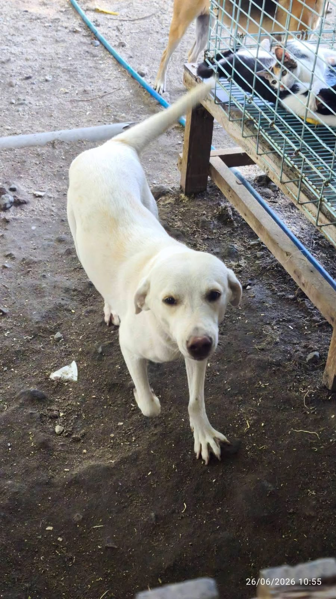
Escaneie o QR Code ou use o Pix copia-e-cola para finalizar sua doação.
será exibido aqui
Em breve: pagamento processado via Mercado Pago / Stripe.
Assim que o pagamento for confirmado, você recebe a confirmação automaticamente.
Eles não podem esperar
Todos os dias, 131 animais dependem de comida, cuidado e atenção médica. Sem ajuda, a situação só piora.
Comida acabando toda semana
Alimentar 131 bocas todos os dias é o maior custo do abrigo — e o que mais aperta quando falta doação.
Animais esperando veterinário
Muitos chegam feridos, doentes ou desnutridos e precisam de atendimento urgente que o abrigo nem sempre consegue pagar.
Castração parada por falta de verba
Sem castração, mais filhotes nascem nas ruas todos os meses — e o ciclo de abandono não para.
Estrutura no limite
Gaiolas, canis e o espaço em geral já não comportam o número de resgates. Cada doação ajuda a melhorar isso.